Už to slibuji dlouho, ale stále jsem se k tomu nedostal. Kdo jsou ti lidé, které vidíte na fotkách nebo můžete spatřit na videích? Finové, Francouzi, Španělé… Je nás tady na Otokylä v bloku A asi 60, možná i víc. Pokusím se vám představit lidi, se kterými trávím nejvíce času.

Spolubydlící – Flavien, Martiño (Laura), Şafak
 V jednom pokoji bydlím s Flavienem z Francie. Studuje tady na School of Business. Je fajn, ale je hodně vysazený na úklid a pořádek, tak se často rozčiluje kvůli nádobí nebo koupelně :P . My ostatní ale moc neprotestujeme, protože víme, že jsme prasátka a správně to má být jinak. Myslím, že mě už skoro naučil mít rád umývání nádobí. Taky chodí spát v rozumné noční hodiny, což se o mě říct nedá, já mám denní režim trochu naopak, takže ho někdy budím, ale holt nedá se nic dělat. Ještě si nikdy nestěžoval tak, že by ho to opravdu výrazně štvalo, oba se snažíme být tolerantní. Jinak je s ním sranda :) . Učil jsem ho hodně slov česky a on si je všechny pamatuje (i slušné věci!), což se o mě a francouzských slovech říct nedá, protože vůbec nejdou ani vyslovit :D . Na fotce uprostřed svých italských přátel.
V jednom pokoji bydlím s Flavienem z Francie. Studuje tady na School of Business. Je fajn, ale je hodně vysazený na úklid a pořádek, tak se často rozčiluje kvůli nádobí nebo koupelně :P . My ostatní ale moc neprotestujeme, protože víme, že jsme prasátka a správně to má být jinak. Myslím, že mě už skoro naučil mít rád umývání nádobí. Taky chodí spát v rozumné noční hodiny, což se o mě říct nedá, já mám denní režim trochu naopak, takže ho někdy budím, ale holt nedá se nic dělat. Ještě si nikdy nestěžoval tak, že by ho to opravdu výrazně štvalo, oba se snažíme být tolerantní. Jinak je s ním sranda :) . Učil jsem ho hodně slov česky a on si je všechny pamatuje (i slušné věci!), což se o mě a francouzských slovech říct nedá, protože vůbec nejdou ani vyslovit :D . Na fotce uprostřed svých italských přátel.
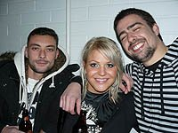Martiño tady je od minulého semestru a byl to první spolubydlící, kterého jsem měl. Je z Viga (1. pád Vigo), z Galicie ve Španělsku. Proto s ním taky moc španělštinu neprocvičím – mluví galicijsky, což je blíž portugalštině než španělštině. Ach jo :) . Martiño má přítelkyni, Finku Lauru, tak si ji sem někdy vodí. Jeho tutorka je Sinikka, takže s tou se kamarádíme taky hodně a často je u nás na pokoji. Martiño studuje elektrotechniku na School of Engineering a někdy jsem mu pomáhal kompilovat C++ a Javu v Ubuntu. Ukázal jsem mu Eclipse a byl z něj nadšený :) . Martiño je strašně fajn a tady je asi jeden z mých největších kamarádů, dokážeme dělat srandu, vtipy, opravdu se dobře bavit. Liší se tak nějak od ostatních Španělů, není až takový „typický Španěl“, řekl bych. Mluví velmi dobře anglicky, co se týče slovní zásoby, komunikativnosti a gramatiky. Výslovnost je taková trochu galicijská a někdy mě opravdu přivádí k záchvatům smíchu (nazvat pumpičku na kolo plum místo pump, to už mě dostalo). Na fotce s Laurou a Antoniem.
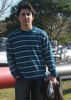Şafak je z Turecka a studuje na School of Business. Pochází z malé vesničky daleko na východě Turecka, ale studuje v Istanbulu. Ukazoval mi moc pěkné fotky z Turecka a vyprávěl mi o něm. Ze začátku měl problém s angličtinou, ale rychle se rozmluvil a hodně se zlepšil. Je hrozně hodný. Je to muslim, takže ho někdy najdeme, jak se klaní a modlí, ale nevadí nám to. Taky nechodí na párty, protože nepije alkohol (jako všichni muslimové, alespoň teda všichni muslimové tady). Ale asi není ani tak moc společenský, protože jsme mu vysvětlovali, že pít nemusí a může se dobře bavit, že jde o lidi, ne o alkohol, ale stejně na párty nechodí. Žije v pokoji s Martiñem a tak je někdy trochu vyvedený z míry, když tam má Martiño Lauru. To pak chudák chodí různě po pokoji, protože je mu blbé být s nimi v jedné místnosti (i když si třeba jen povídají a tak :) ), až mi ho bývá líto :) .
Španělsko – Antonio, Narciso
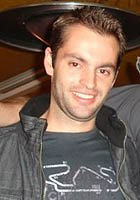Antonio bydlí hned na pokoji vedle a je z Valencie na jihu Španělska. S ním tedy španělštinu procvičovat můžu. Je s ním sranda a začínáme být taky dobří kamarádi, protože tráví většinu času s Martiñem… Až si z něj děláme srandu, že Laura má konkurenci… A vůbec si z něj děláme srandu, že má zlomené srdce, že na něj Martiño nemyslí tak jako on na něj… :D
Narciso je taky z Galicie a je to Martiñův dobrý kamarád z Viga. Je to běžec, sportovec. Taky tady je už semestr a taky tráví hodně času s Martiñem, takže i se mnou. Martiño jej oslovuje vždy při uvítání ze srandy „PERRRRO!“ (nebudu překládat ;) ), takže někdy přesně vím, s kým mluví do telefonu apod. a dělám si z nich srandu, protože jim často rozumím :D . Zprvu mi Narciso připadal jako takový ten typický nagelovaný Španěl a moc se mi nepozdával, ale je v pohodě :) . Na fotce je tady Narciso, Antonio je na fotce nahoře se svou láskou.
Francie – Denis, Adrien
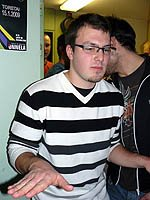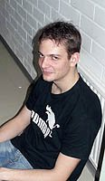Tyhle dva jsem poznal jako úplně první ze všech Erasmáků, když vynechám Andreie a Lorenza, od nichž jsem kupoval kolo. Poznal jsem je na hodině XML, ale to si najděte v historii blogu, to sem nebudu opisovat. Oba jsou party animals, kolem kterých se často všechno děje, ale Denis (na fotce vlevo) je takový tišší element. Jenže znáte to, tichá voda břehy mele. Zabydlel se velmi rychle, momentálně chodí s Ellou :) . Adrien je opravdu zvíře všech párty, je nesmírně aktivní a má velmi dobrou komunikativní angličtinu, takže se nebojí s nikým mluvit a musí být prostě všude. Asi tu není nikdo, kdo by si s těmahle dvěma rád nepokecal nebo s nimi rád netrávil čas :) .
Litva – Indre, Martynas
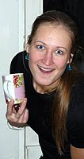S Indre sice tolik času netrávím, protože nechodí na každou první nebo druhou párty jako já, nemá ráda pivo a ve škole se nepotkáváme, ale byli jsme spolu na nějakých akcích a třeba jsme strávili celé odpoledne v muzeu a na hokeji.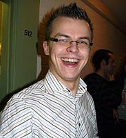 Je do všeho správně zapálená a je s ní sranda. Závodně hraje basketbal, no je taky docela vysoká.
Martynas je živel odvedle, bydlí v pokoji s Antoniem. Trávíme dost času, nechybí skoro na žádné akci. Je s ním sranda a rád popichuje lidi. Má svůj smysl pro humor, který mi ale docela sedne. Studuje nějaký speciální obor zaměřený na osly, ale když mi to řekl, tak jsem myslel, že si dělá srandu a smál jsem se. No, nedělal si srandu, takže se pak cítil trochu uražený :D . Martynas a Antonio v akci:
Československo – Martin, Filip, Miro, Anča, Palko, Peter
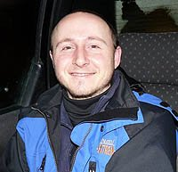Tady abych se bál něco napsat… Ještě si to přečtou a pak mě někam zahrabou do sněhu ;) . S Martinem a Filipem jsem byl na roadtripu do Švédska. Martina fascinují vojenské věci a zbraně a je fajn, je pro každou srandu. Filip (na fotce) je tady už od minulého semestru a dobře se s ním povídá, hned mi byl sympatický. A to nejen proto, že má taky holku na Slovensku ;) :P .
 Miro (Slovensko) je kapitola sama pro sebe. Ten můj blog, zdá se, čte, takže tady musím být opatrný :P . Určitě není nějaký šílený „party animal“, ale umí se bavit a hlavně se svou Rychlou Rotou z pokoje 512 umí udělat taky hodně srandy :) . Pití alkoholu nepovažuje za něco extrémně podstatného nebo nutného, chodí do posilovny a u některých jeho fotek na Facebooku aby se člověk bál, jestli se nechystá na nějakou kulturistickou soutěž :P . 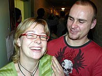Má fotogenický ksicht a na všech fotkách vypadá jako modelka :D . Když se to sečte a vynásobí, dá se vlastně s odstupem říct, že má docela slušnou Playboy image, i když spíš tak nějak mimochodem, není to nějaký namyšlený boreček, to právě že ne, spíš naopak, je fajn.
Miro (Slovensko) je kapitola sama pro sebe. Ten můj blog, zdá se, čte, takže tady musím být opatrný :P . Určitě není nějaký šílený „party animal“, ale umí se bavit a hlavně se svou Rychlou Rotou z pokoje 512 umí udělat taky hodně srandy :) . Pití alkoholu nepovažuje za něco extrémně podstatného nebo nutného, chodí do posilovny a u některých jeho fotek na Facebooku aby se člověk bál, jestli se nechystá na nějakou kulturistickou soutěž :P . 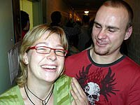Má fotogenický ksicht a na všech fotkách vypadá jako modelka :D . Když se to sečte a vynásobí, dá se vlastně s odstupem říct, že má docela slušnou Playboy image, i když spíš tak nějak mimochodem, není to nějaký namyšlený boreček, to právě že ne, spíš naopak, je fajn.
Anča je tady jediná Češka a se svým údělem bojuje statečně :D . Je z VUT jako já, akorát ze stavárny. Dobrá kámoška, je tady prakticky stejně dlouho jako já a moc rád si s ní pokecám. Je s ní sranda :) . Teď si tak říkám, že na hodně akcích jsem ji taky neviděl, takže asi taky bude v tomhle ohledu mírnější živel :P . Na fotce s Martinem.
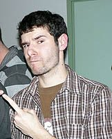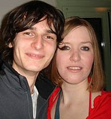Palko a Peter jsou slovenští „filmaři“, studují tady na School of Dance and Media, která je shodou okolností ve stejné budově jako moje technika, takže se tam potkáváme. Oba jsou to sympaťáci a jejich přístup a humor mi sedí, ale ještě jsem neměl příležitost prozkoumat je nějak blíž, protože tu zatím nejsou moc dlouho. Viděl jsem nějaké to video od Palka (na fotce vlevo) a bylo to super :) . Je fakt poznat, že to studuje. Peter je na fotce se Sini.
Rakousko, Německo – Armin, Martin, Lars, Simone
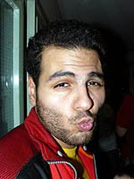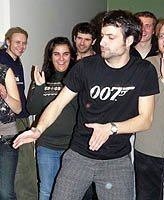Armina jsem původně tipoval někam do Brazílie, ale ukázalo se, že je z Vídně :D . Martin je naopak přízvukem úplně jasný Rakušák. Oba tvoří silné Rakouské komando, Martin je vyloženě živel a nesmí chybět na absolutně žádné akci a párty. Co víc, Martin dokonce nesmí chybět ani na žádné fotce :D . Má úžasnou schopnost nacházet se na 90% všech fotek, ačkoliv jste původně zamýšleli fotit soby nebo vlastně úplně cokoliv :D . Určitě je to jeden z mých nejoblíbenějších Erasmáků tady, šíří kolem sebe zábavu a akci :) .
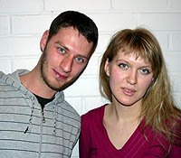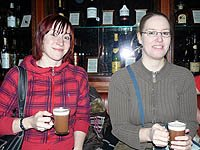Lars a Simone jsou z Německa. Nemám Německo ani Němce rád, ale jak jsem i vždy říkal, spíš obecně. Nikdy jsem moc nevztahoval podobné pocity na konkrétní lidi, kteří s nimi nemají nic společného. Lars (na fotce s Kaťou) je fajn kámoš a rád s ním trávím čas. Vedli jsme třeba dlouhé diskuse o finském a vůbec jakémkoliv pivu, protože jeho i moje země vědí co pivo opravdu znamená :)) . Simone (na fotce se Sini) přijela před pár dny, ale fajně jsme si popovídali na Sangría párty a je to sympatická holka. Někdy jí úplně všechno nerozumím, protože má silný německý přízvuk a mluví celkem rychle – potom nestíhám chytat deformovaná anglická slova a překládat je :D .
Ostatní – Sinikka, Maarten, Mika, Ekaterina, Elżbieta, …
Sinikka (Sini, na fotkách výše) je tutorka mého galicijského spolubydlícího a taky jeho kamarádka, takže jsme se rychle skamarádili i my dva. Máme ji rádi a rádi se s ní dáme do řeči. Její historie je tak složitá, že je až nepopsatelná. Je ze Švýcarska, ale mám dojem, že prošla snad dalších 5 zemí, byla na snad třech Erasmech a teď žije ve Finsku, takže teď se stará ona o nás, Erasmáky :) . I když někdy spíš my o ni :D .
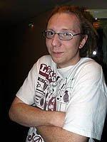Maarten je z Holandska a je to asi jediný Nizozemec, s nímž jsem měl tu čest. Má dredy a je to takový správný flegmatik. Nevím, jestli je to proto, že v Holandsku jezdí na kolech snad i novorozenci, ale Lorenzo si jej vybral jako pomocníka pro cyklomafii po tom, co Andrei skončil Erasmus a odjel zpět domů do Rumunska. Mimochodem, pokud se vám zdá (a třeba i z fotek), že každý druhý se tu jmenuje Martin (Martynas, Maarten apod.), tak ano, je to tak, je jich tu snad 10 :)) .
 Mika bydlí taky na Otokylä, stejně jako třeba Sini. Bydlí ale na jiných blocích, blok A je určen pro živelnou zahraniční pohromu jménem Erasmus. Mika je oblíbenec úplně všech tady, je to člověk, který se taky umí postarat o zábavu a žádnou zábavu nezkazí. Oblibu si získal asi hlavně tím, že není uzavřený jako jiní Finové, ale je až nezvykle extrovertní, přátelský a otevřený :)) . Byl nám řidičem na roadtripu.
Mika bydlí taky na Otokylä, stejně jako třeba Sini. Bydlí ale na jiných blocích, blok A je určen pro živelnou zahraniční pohromu jménem Erasmus. Mika je oblíbenec úplně všech tady, je to člověk, který se taky umí postarat o zábavu a žádnou zábavu nezkazí. Oblibu si získal asi hlavně tím, že není uzavřený jako jiní Finové, ale je až nezvykle extrovertní, přátelský a otevřený :)) . Byl nám řidičem na roadtripu.
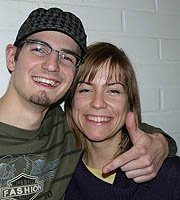Elżbieta nebo taky Ella je Polka. Chodí s Denisem, studuje School of Business a bydlí na stejném patře jako já, s Aničkou. Je to fajn kámoška, dost často jsem s ní vedl dlouhé debaty a bavili jsme se o všem možném, dokonce jsme rozebírali i finanční krizi apod. :) . Budu s ní (a s dalšíma holkama :P ) dělat projekt do project managementu.
Ekaterina, Kaťa, je Ruska, která je tak skoro napůl Finka a je docela střelená :D . Je to takové naše veřejné tajemství. Teď odjela na měsíc domů, dělat zkoušky. Na fotce je nahoře s Larsem.
 Kindle
Kindle